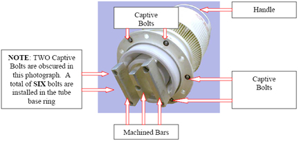

Operating Documentation
Direction 5440001-3, Rev# 6
Module Version 1.0, Version Date 4/26/07
Operating Documentation |
| ||||
| Electrical Shock. | ||||
| LETHAL VOLTAGES ARE PRESENT INSIDE THE POWER SUPPLY AND RF DECKS! | ||||
| BEFORE REMOVING ANY EQUIPMENT COVER Lock Out/Tag Out the RF Cabinet, UNPLUG OR DISABLE THE AC MAINS SUPPLY, AND WAIT AT LEAST THREE MINUTES TO ALLOW THE POWER SUPPLIES TO DISCHARGE COMPLETELY! DO NOT TOUCH ANYTHING INSIDE THE AMPLIFIER UNTIL THE ITEM YOU MUST HANDLE IS SPECIFICALLY DISCHARGED WITH A KNOWN-FUNCTIONAL DEVICE SUCH AS A CHASSIS-CONNECTED SHORTING STICK OR SIMILAR! |
| Condition | Reference | Effectivity |
|---|---|---|
Many components within the amplifier are static sensitive! Take appropriate precautions when removing or installing any system part. Be sure to use appropriate ESD tools. | - | - |
| ||||
| Electrical Shock. | ||||
| LETHAL VOLTAGES ARE PRESENT INSIDE THE POWER SUPPLY AND RF DECKS! | ||||
| BEFORE REMOVING ANY EQUIPMENT COVER Lock Out/Tag Out the RF Cabinet, UNPLUG OR DISABLE THE AC MAINS SUPPLY, AND WAIT AT LEAST THREE MINUTES TO ALLOW THE POWER SUPPLIES TO DISCHARGE COMPLETELY! DO NOT TOUCH ANYTHING INSIDE THE AMPLIFIER UNTIL THE ITEM YOU MUST HANDLE IS SPECIFICALLY DISCHARGED WITH A KNOWN-FUNCTIONAL DEVICE SUCH AS A CHASSIS-CONNECTED SHORTING STICK OR SIMILAR! |
Prepare for shutdown of equipment. Notify affected personnel working in the area that LOTO is being performed.
At the front panel of the PDU, flip the RFI / Amp circuit breaker switch to the OFF position.
Lockout/Tagout the Breaker Panel on the PDU.
On the front of the RF Cabinet, locate the CB-1 circuit breaker and place in the OFF position.
| NOTE: | If the amplifier was ON, then turned OFF, the fans continue to run for approximately one minute to allow the amplifier to cool down. |
Verify the amplifier is OFF.
Verify the fans are not running.
Allow at least three minutes for all high-voltage power supplies to discharge.
| ||||
| Many Components Within The Amplifier Are Static Sensitive! Take appropriate precautions when removing or installing any system part. | ||||
After allowing at least three minutes for all high-voltage power supplies to discharge, put on the ESD wrist strap and ground to cabinet.
Remove both the RF deck cabinet top panel and the RF deck interior tube compartment cover. The tube compartment cover screws are spring-loaded and captive; they will “release” with a quarter-turn counter-clockwise (to the left). See Step .
| ||||
| Electrocution. | ||||
| LETHAL VOLTAGES ARE PRESENT INSIDE THE POWER SUPPLY AND RF DECKS! | ||||
| DO NOT TOUCH ANYTHING INSIDE THE AMPLIFIER UNTIL THE ITEM YOU MUST HANDLE IS SPECIFICALLY DISCHARGED WITH A KNOWN-FUNCTIONAL DEVICE SUCH AS A CHASSIS-CONNECTED SHORTING STICK OR SIMILAR! |
After removing the tube compartment cover both the IPA and PA tubes are visible and are shown in Illustration 2. DISCHARGE RESIDUAL HIGH VOLTAGE TO CHASSIS WHERE INDICATED. Connect a conductive stick between the tube anode strap and the chassis.
With the pliers grip the tube anode cap then pull the tube STRAIGHT UP and out of its socket. The socket fit will be tight. DO NOT ROTATE THE TUBE DURING REMOVAL! The IPA tube removal technique is illustrated in Illustration 5.
| ||||
| Many Components Within The Amplifier Are Static Sensitive! Take appropriate precautions when removing or installing any system part. | ||||
Before installing the replacement IPA tube, verify all base pins are straight; straighten them (with long-nose pliers, not supplied) if necessary.
Locate the IPA tube “index” pin. It is larger than the others. The index pin is shown in Illustration 6.
Orient the tube index pin with its socket mate. Lower the tube straight down into the chimney.
Carefully rotate the tube side-to-side, as needed, to align the index pin with its socket mate. Once properly oriented the tube will partially “drop” into the socket.
Apply even, vertical, downward pressure on the tube anode to seat the tube in the socket.
Replace the RF deck interior tube compartment cover. The tube compartment cover screws are spring-loaded and captive; they will “tighten” with a quarter-turn clockwise (to the right). See Illustration 1.
Replace the RF deck cabinet top panel.
Reconnect the system cabling as appropriate.
Remove LOTO from cabinet.
Restore power to cabinet.
The tube hours counter should be reset after tube replacement, refer to Tube Hours Counter Reset procedure.
| ||||
| Many Components Within The Amplifier Are Static Sensitive! Take appropriate precautions when removing or installing any system part. | ||||
After allowing at least three minutes for all high-voltage power supplies to discharge, put on the ESD wrist strap and ground to cabinet.
Remove both the RF deck cabinet top panel and the RF deck interior tube compartment cover. The tube compartment cover screws are spring-loaded and captive; they will “release” with a quarter-turn counter-clockwise (to the left). See Illustration 7.
| ||||
| Electrocution. | ||||
| LETHAL VOLTAGES ARE PRESENT INSIDE THE POWER SUPPLY AND RF DECKS! | ||||
| DO NOT TOUCH ANYTHING INSIDE THE AMPLIFIER UNTIL THE ITEM YOU MUST HANDLE IS SPECIFICALLY DISCHARGED WITH A KNOWN-FUNCTIONAL DEVICE SUCH AS A CHASSIS-CONNECTED SHORTING STICK OR SIMILAR! |
After removing the tube compartment cover both the IPA and PA tubes are visible and are shown in Illustration 8. DISCHARGE RESIDUAL HIGH VOLTAGE TO CHASSIS WHERE INDICATED. Connect a conductive stick between the tube anode strap and the chassis.
Remove the eight bolts from the ring bracket.
With a short 5/32 inch hex wrench loosen the two horizontally-mounted hex “clamping bolts” that hold the ring bracket around the tube. The bolts are shown in close-up in Illustration 10.
Lift and remove the ring bracket from the tube anode. See Illustration 10 for location.
| NOTE: | The six bolt access holes are located in the tank circuit inductor that surrounds the perimeter of the tube. Insert the wrench in any hole then extend it downward and into the hex-head bolt. Loosen the bolt by turning it to the left (counter-clockwise) until the bolt head “pops” up. Then similarly loosen the remaining bolts. |
Use the supplied hex wrench to loosen all six hex-head bolts.
After all six bolts are loosened and are completely free of the chassis carefully lift the tube – with its built-in “handles” -- STRAIGHT UP and out of its socket. DO NOT ROTATE THE TUBE!
The base of the PA tube has specially machined bars attached to it. The bars allow easy tube installation from the top of the compartment. The companion socket has been modified with “finger stock” which, when the tube is inserted, will contact the tube filament and cathode bars. 
Inspect the socket – ensure none of the finger stock is damaged!
Lift the tube with its handles and orient the tube base “bars” with the socket finger stock.
Carefully lower the tube into its socket while ensuring the base bars will mate with the finger stock.
Press the tube downward into the socket.
Use the supplied hex wrench to start and thread the six captive hex-head bolts attached to the tube base ring into their respective chassis retaining nuts. Do not allow the screws to cross-thread.
Use the supplied hex wrench to tighten all six hex-head bolts.
See Illustration 14. Replace the tube anode retaining-ring; start all eight bolts but do not tighten them.
Inspect the retaining ring; then press it down so that it is snug against the tank inductor beneath it.
Tighten the four retaining-ring bolts furthest away (opposite) from the two horizontally oriented ring-clamping bolts.
Tighten the two horizontally oriented ring-clamping bolts.
Tighten the last four retaining-ring bolts. Then verify all eight bolts are tight.
When the tube installation is complete replace the tube compartment.
Replace the RF Deck top covers.
Reconnect the system cabling as appropriate.
Remove LOTO from cabinet.
Restore power to cabinet.
The tube hours counter should be reset after tube replacement, refer to Tube Hours Counter Reset procedure.
Perform the following calibrations:
After the Maximum Power Setup perform the final calibration: